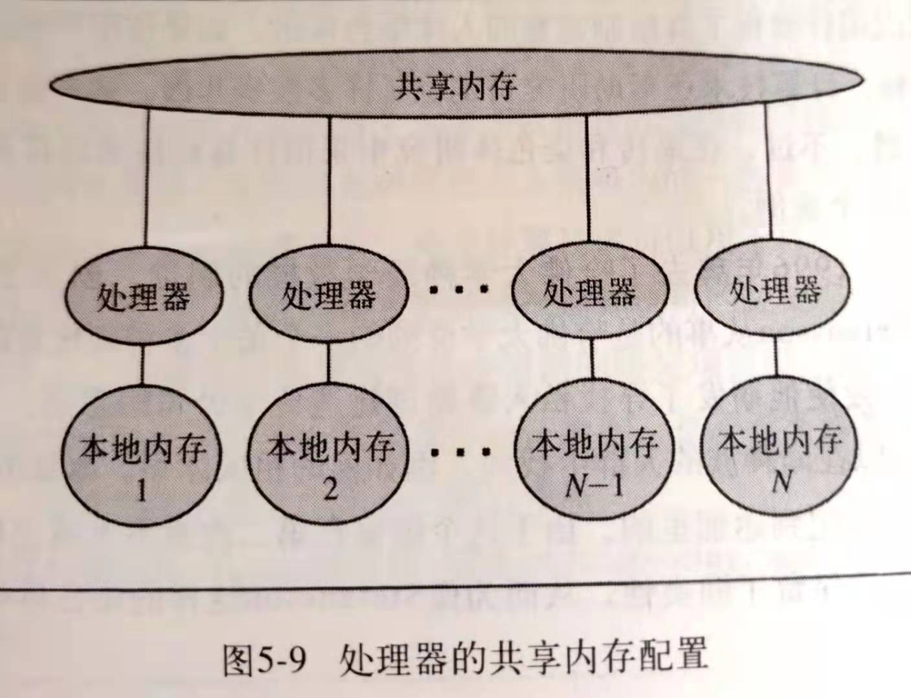
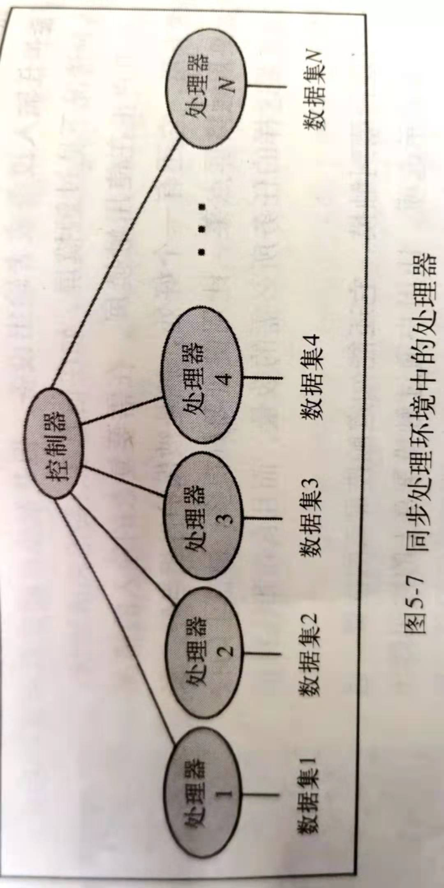
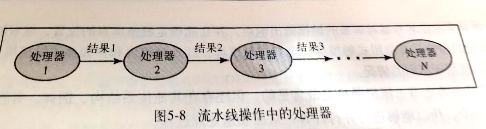

非冯·诺曼体系计算机（链接百度百科）
现代计算机自问世以来已历经50余年的历史，但计算机所遵循的基本结构形式始终是冯·诺依曼机结构。它的基本结构特征是“共享数据和串行执行”的计算机模型。
按照这种结构，程序和数据放在共享存储器内，CPU取出指令和数据进行相应的计算，因此CPU与共享存储器间的信息通路成为影响系统性能的“瓶颈”。多年来在并行计算机结构及处理的研究已经取得了很多成果，如阵列机、流水机、向量机等，使计算速度有了很大提高，但就本质上仍无法克服冯·诺依曼机结构上的缺陷。
随着计算机发展，人们除了继续对命令式语言进行改进外，提出了若干非冯·诺依曼型的程序设计语言，并探索了适合于这类语言的新型计算机系统结构，大胆地脱离了冯·诺依曼原有的计算机模式，寻求有利于开发高度并行功能的新型计算机模型，例如光子计算机（光处理器利用光的高速和无干扰性，使用光学元件构成处理器。尚在研发中），并行计算机、数据流计算机以及量子计算机等 。
现在我们来聊一下，由于冯·诺曼结构计算机采用的是共享数组和串行执行，而大大限制了运算速度，受此影响，人们开发出了并行处理技术，下面我们介绍其中两种：
(1)同步处理(synchronous processing)：用多个处理器把同一个程序应用到多个数据集上，采用这种方法，处理器同时执行相同的指令，也就是说，一个公共程序在每个处理器上运行。
(2)流水线操作(pipelining processing):一前一后地安排多个处理器，使每个处理器负责整个运算的一部分。
